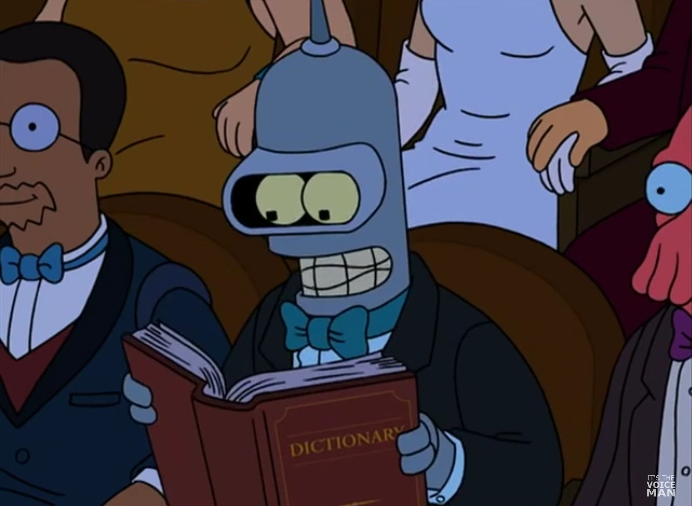
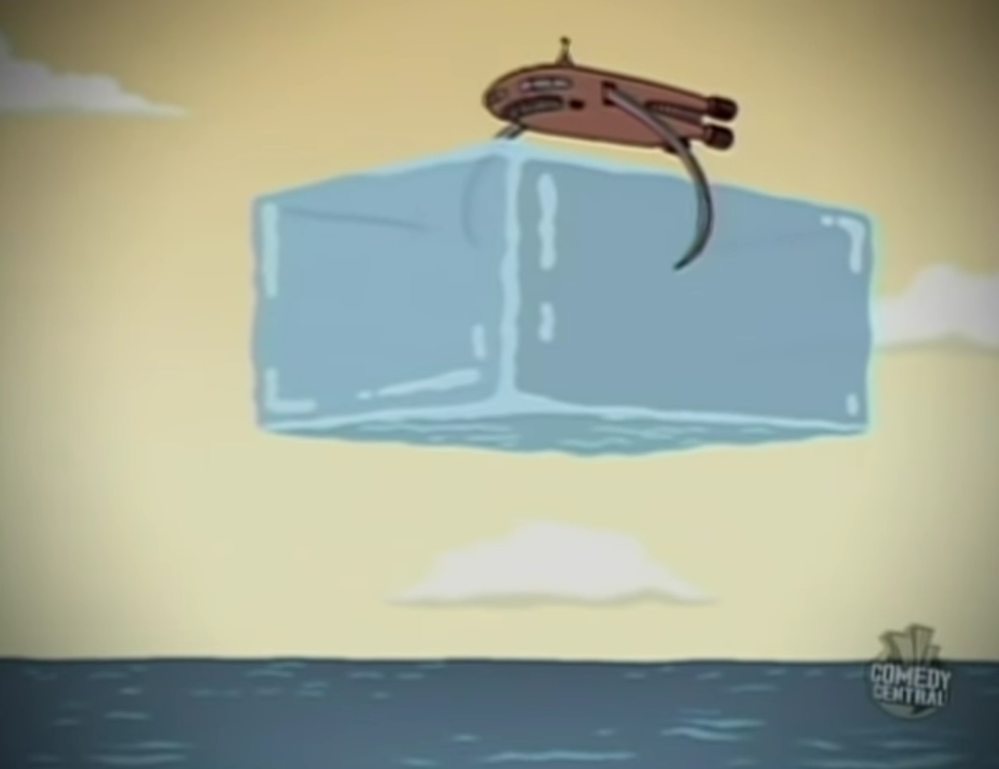
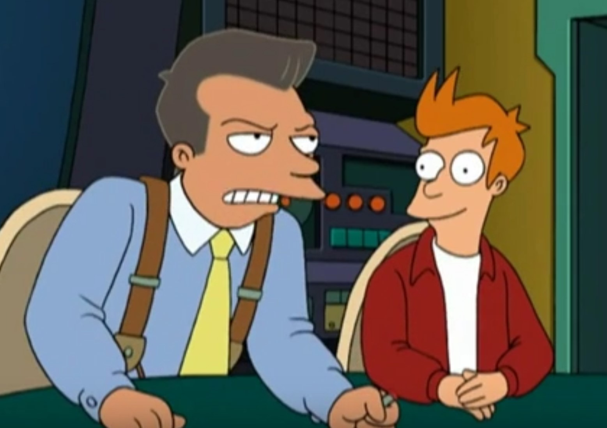
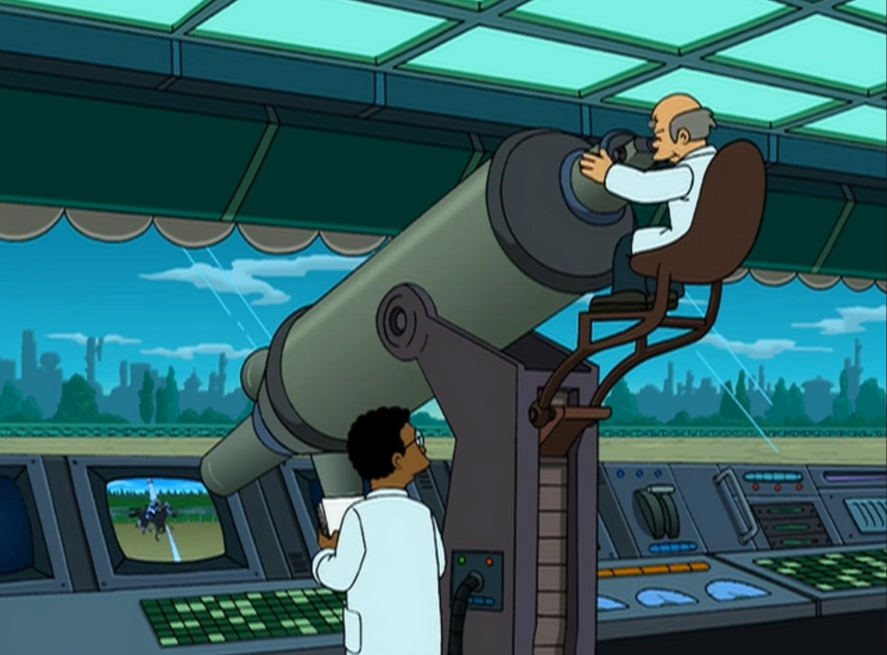
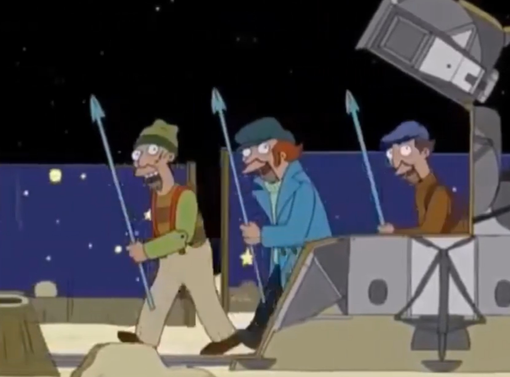
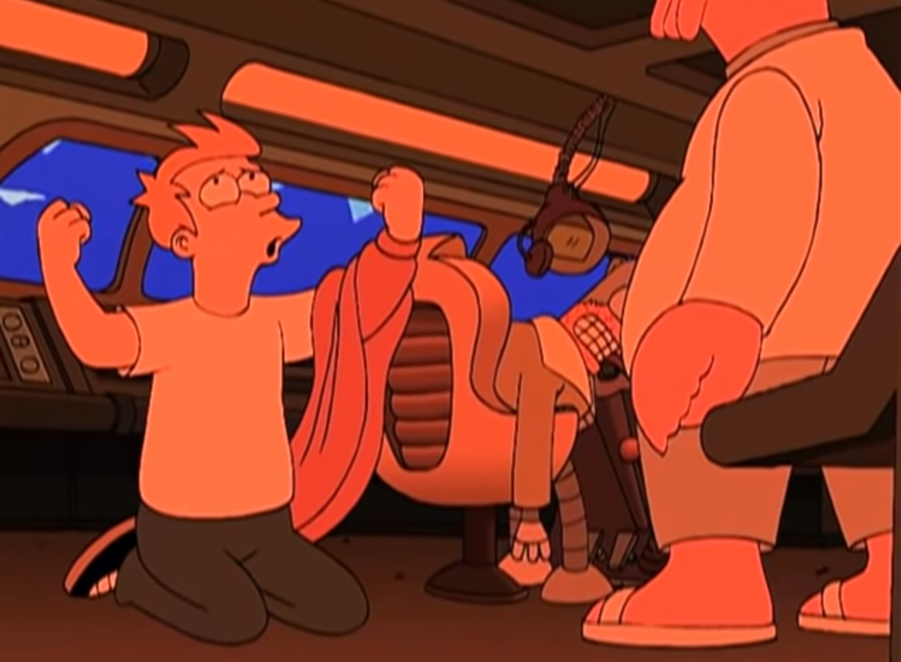
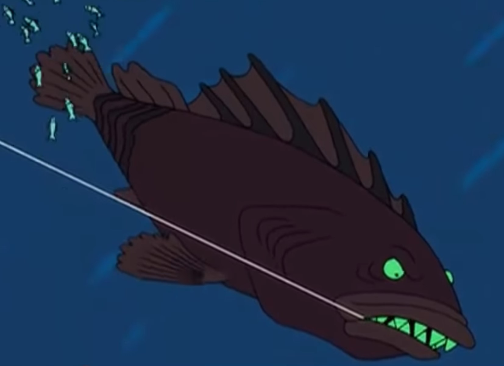

| Video Name | Image | Description | Length | Video Poster's YouTube Page |
|---|---|---|---|---|
| Bureaucracy | Hermes Conrad tells us about bureaucrats | 01:37 | krizogg.AkumaOG | |
| Irony |  | Bender defines irony | 00:09 | itsthevoiceman |
| Climate Change |  | A PSA that describes how to solve climate change, "Once and for all!" | 01:42 | David Sklenicka |
| Business |  | Futurama explains business, 80's style. | 00:42 | motion07 |
| Measurement Problem |  | Quantum mechanic's measurement problem | 00:17 | Joah Gerstenberg |
| Moon Landing |  | History of the moon landing | 00:26 | Warp10 |
| Preperation |  | Futurama explains the importance of properly preparing | 00:14 | Hugo2608 |
| Spaceships |  | How much pressure can the Planet Express ship take? | 00:24 | Mark Huntress |
| Conservation | We must conserve our forests to protect our endangered mysteries, if they exist | 00:46 | Wayne Wolfe |